Ese proyecto nació durante la pandemia provocada por el Covid-19. Millones de muertes eran millones de historias perdidas. El conocimiento y cultura de nuestros antepasados se perdía y no sabía de nadie que intentase documentarla. Por ahora tengo suerte de que mis abuelos tienen buena salud, pero el día que ya no estén quiero compartir su historia, cultura y conocimiento con más gente.
Durante el verano de 2020 restauramos el antiguo establo para hacer el museo físico. Se vació, se limpió, se enyesaron las juntas de las piedras, se hicieron nuevos el suelo de hormigón y el de madera de la planta de arriba y se pusieron los estantes con objetos para enseñar al público.
Esta página web se publicó en enero de 2020 para acompañar al museo con descripciones de los objetos y para darlo a conocer al mundo.
Espero que disfrutes del museo tanto como lo he hecho yo durante el proceso.
 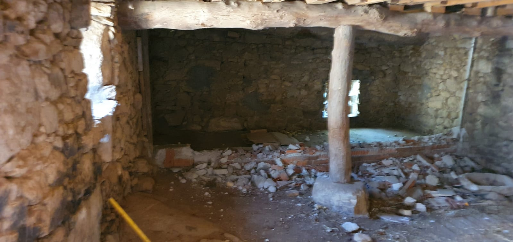
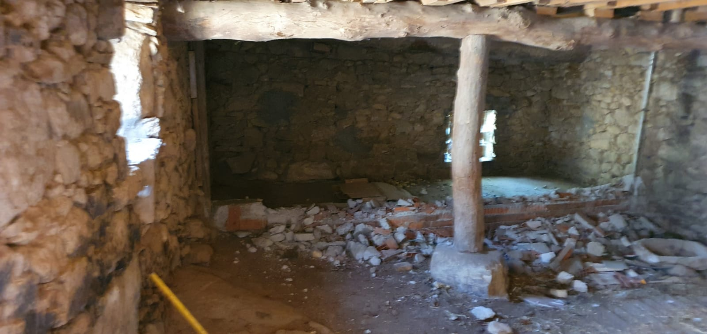


 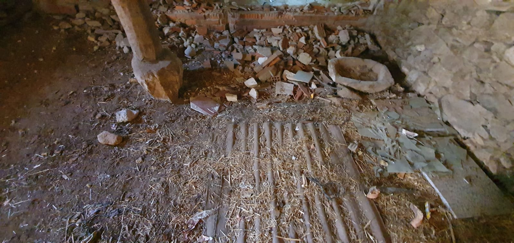
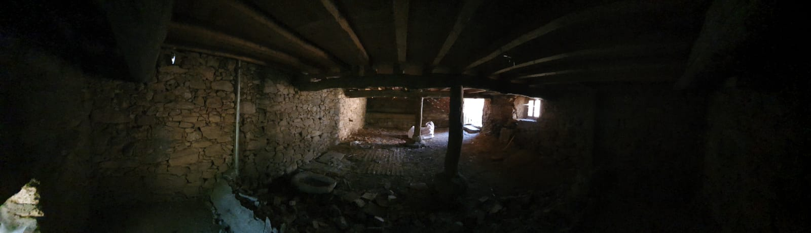
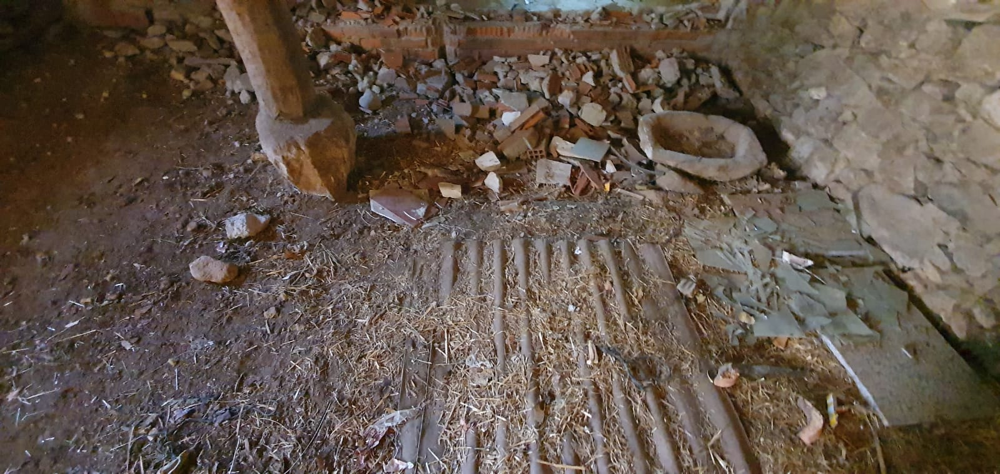
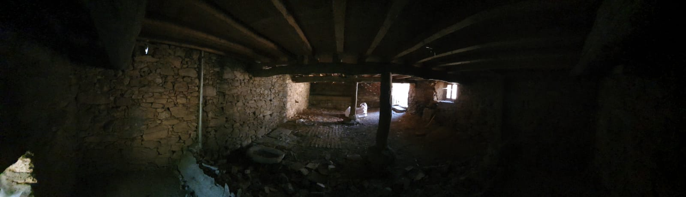


 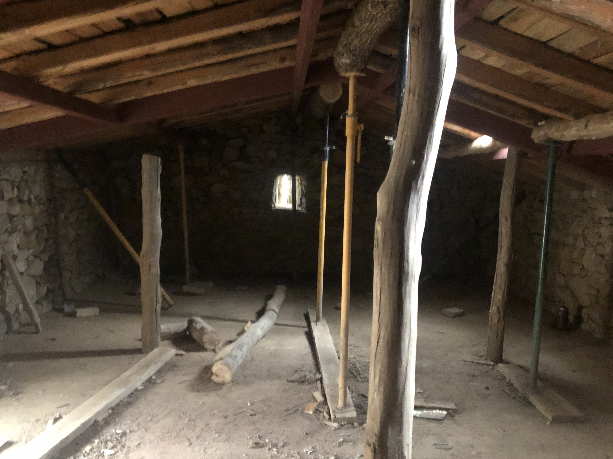
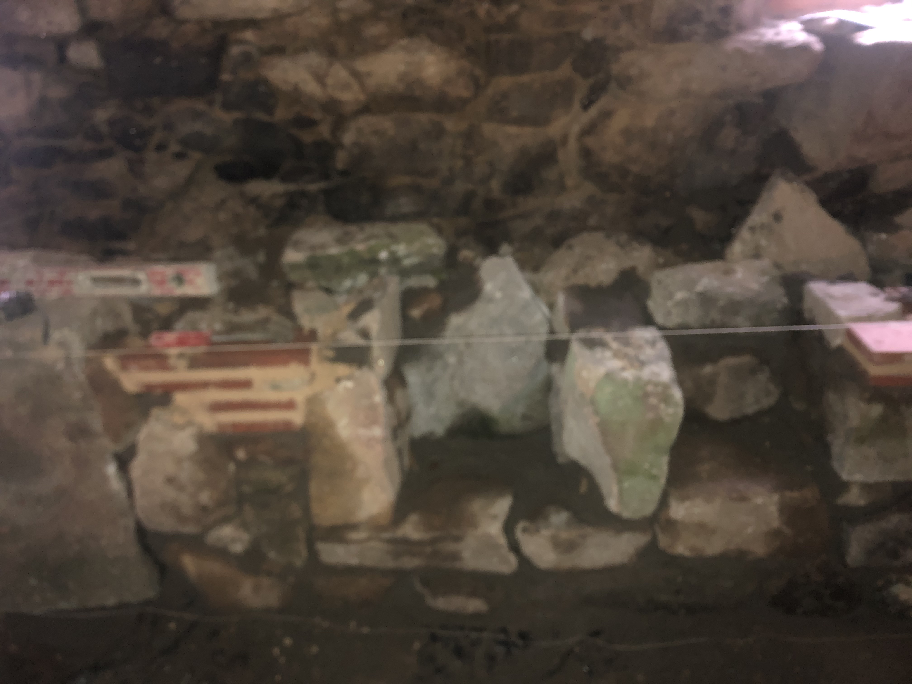
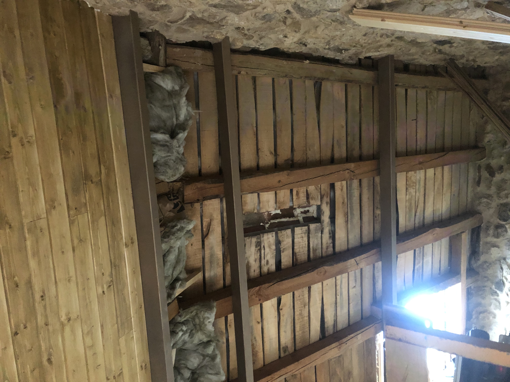
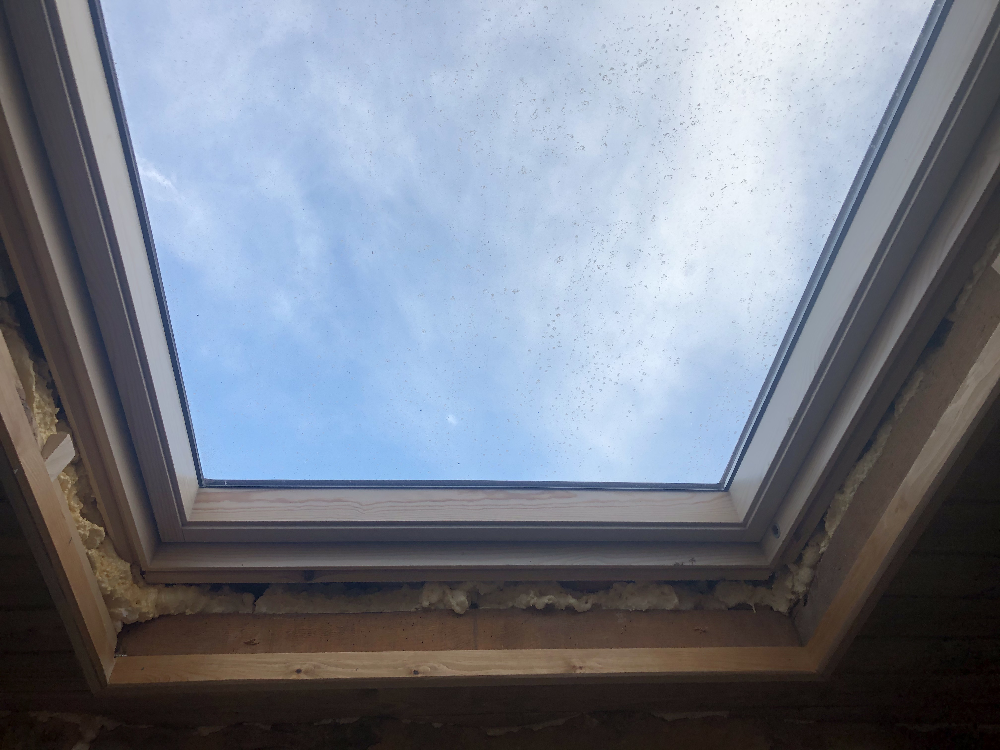
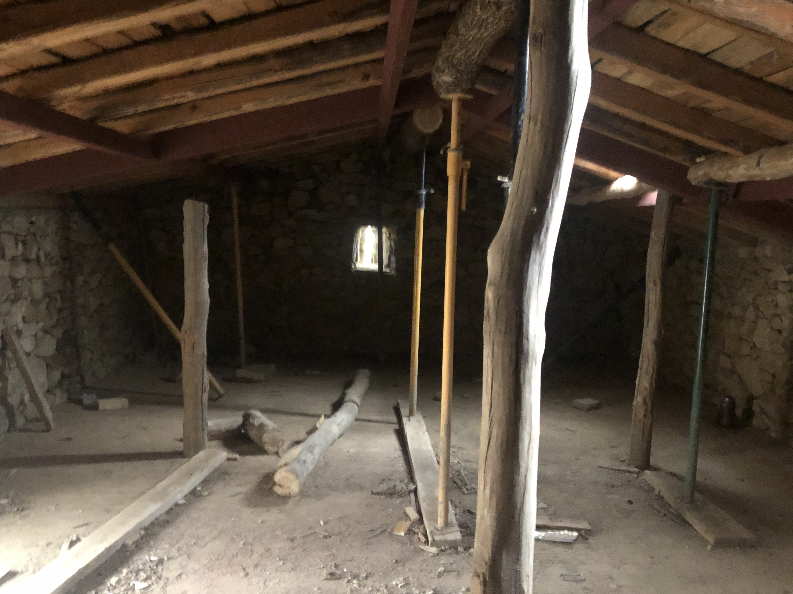
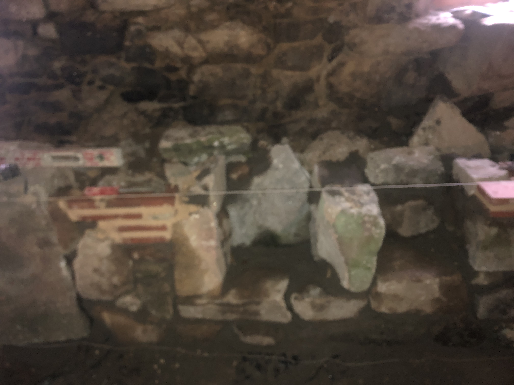
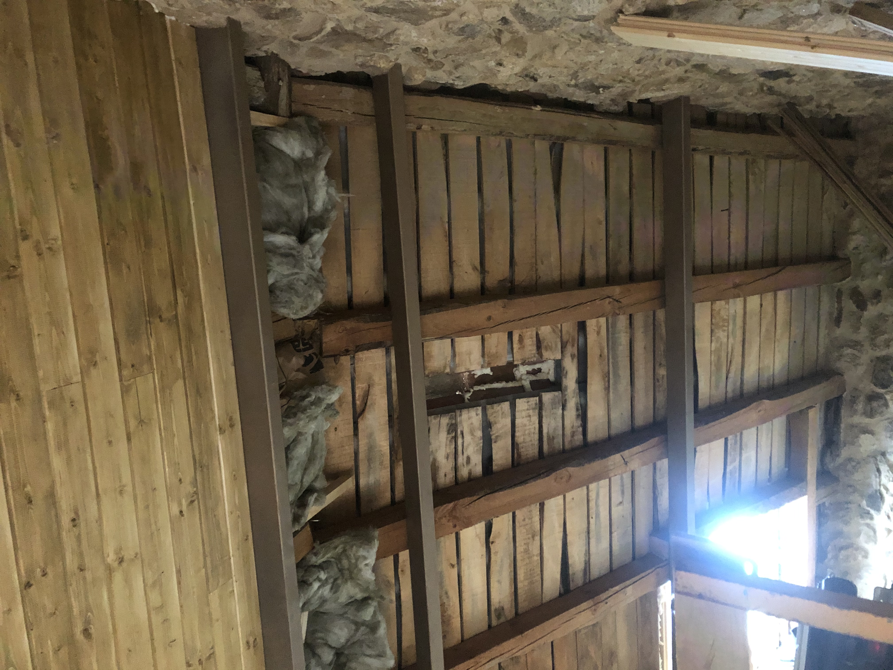
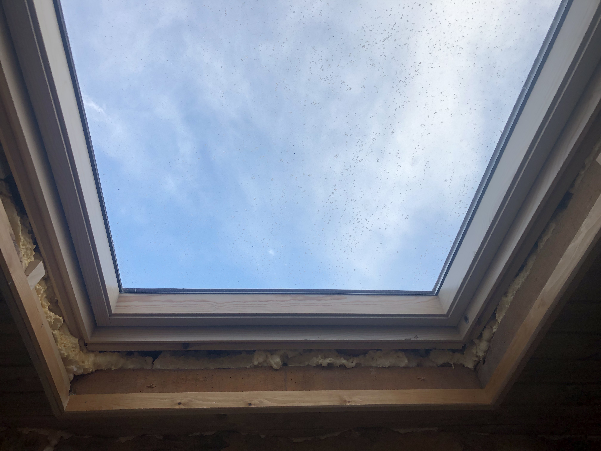